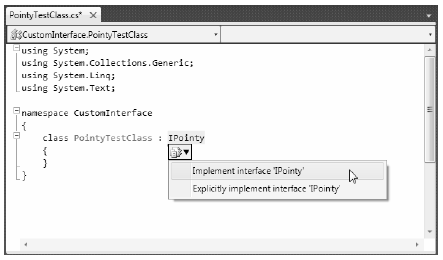

Although interface-based programming is a very powerful technique, implementing interfaces may entail a healthy amount of typing. Given that interfaces are a named set of abstract members, you are required to type in the definition and implementation for each interface method on each type that supports the behavior.
As you would hope, Visual Studio 2010 supports various tools that make the task of implementing interfaces less burdensome. By way of a simple test, insert a final class into your current project named PointyTestClass. When you implement IPointy (or any interface for that matter), you might have noticed that when you complete typing the interface’s name (or when you position the mouse cursor on the interface name in the code window), the first letter is underlined (formally termed a smart tag). When you click the smart tag, you will be presented with a drop-down list that allows you to implement the interface (see Figure 9-5).
Figure 9-5. Implementing interfaces using Visual Studio 2010
Notice you are presented with two options, the second of which (explicit interface implementation) will be examined in the next section. For the time being, select the first option and you’ll see that Visual Studio 2010 has generated stub code (within a named code region) for you to update (note that the default implementation throws a System.NotImplementedException, which can obviously be deleted).
namespace CustomInterface { class PointyTestClass : IPointy { #region IPointy Members public byte Points { get { throw new NotImplementedException(); } } #endregion } }
Note Visual Studio 2010 also supports extract interface refactoring, available from the Refactor menu. This allows you to pull out a new interface definition from an existing class definition.